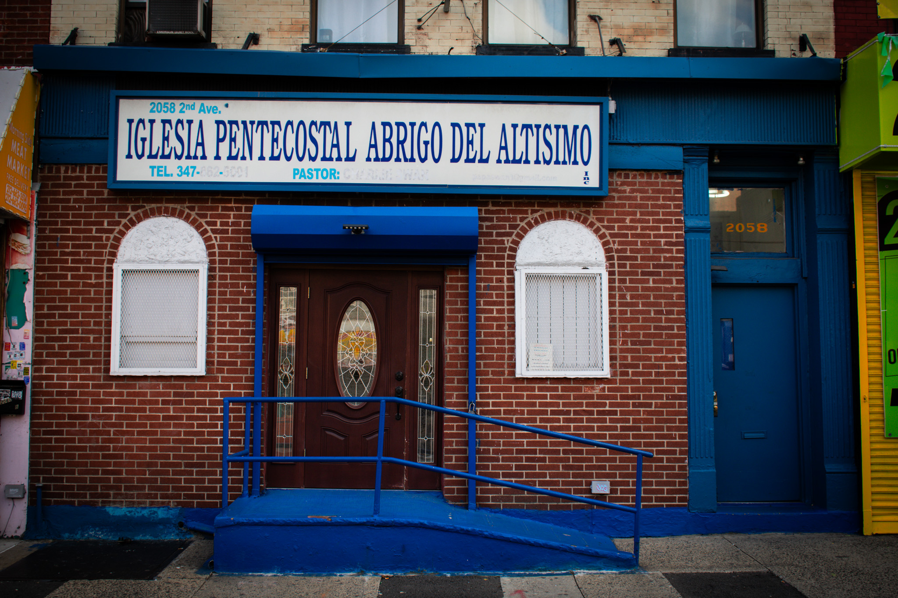
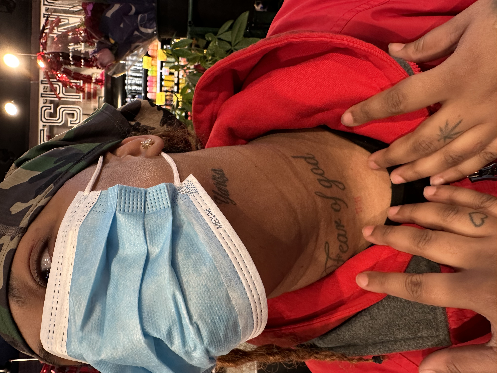
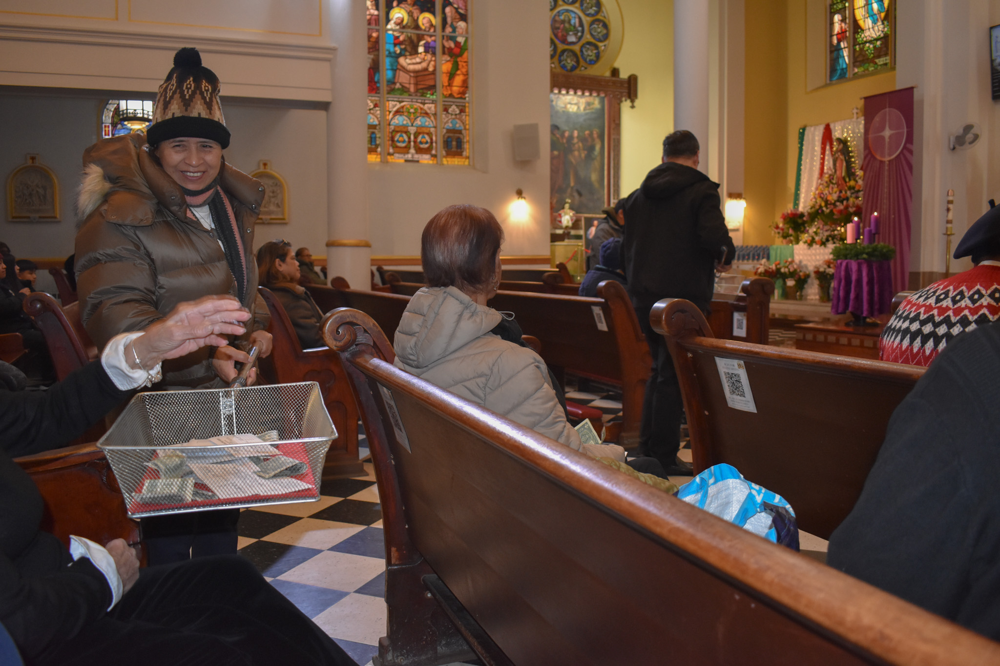
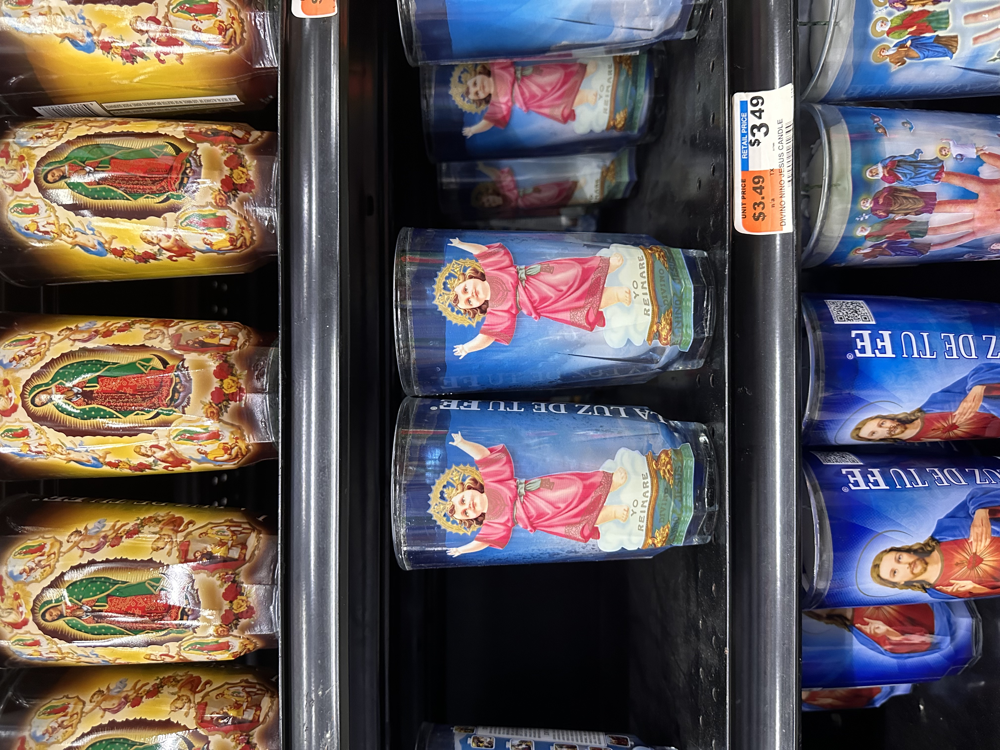
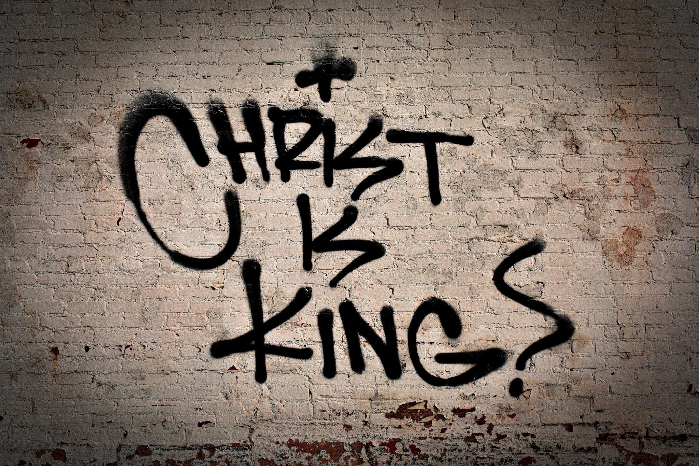
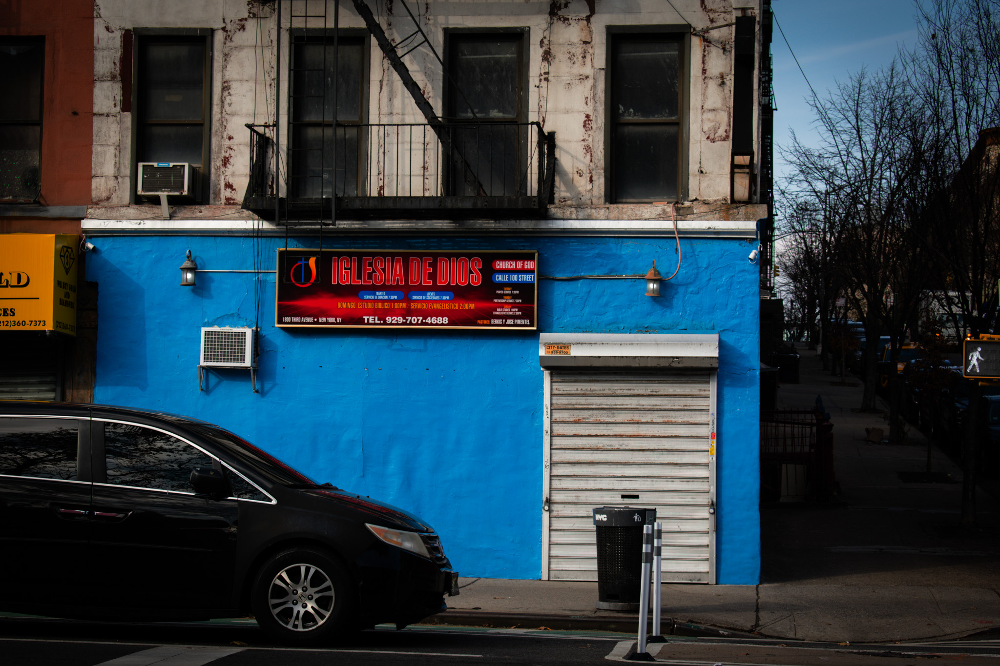
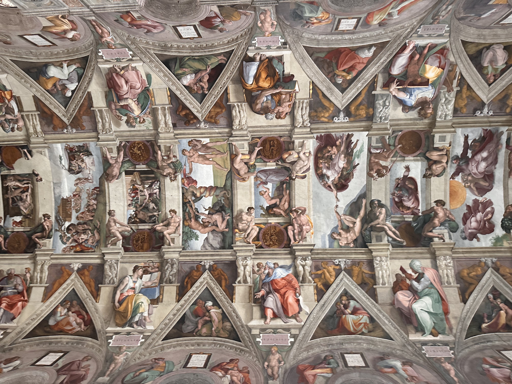
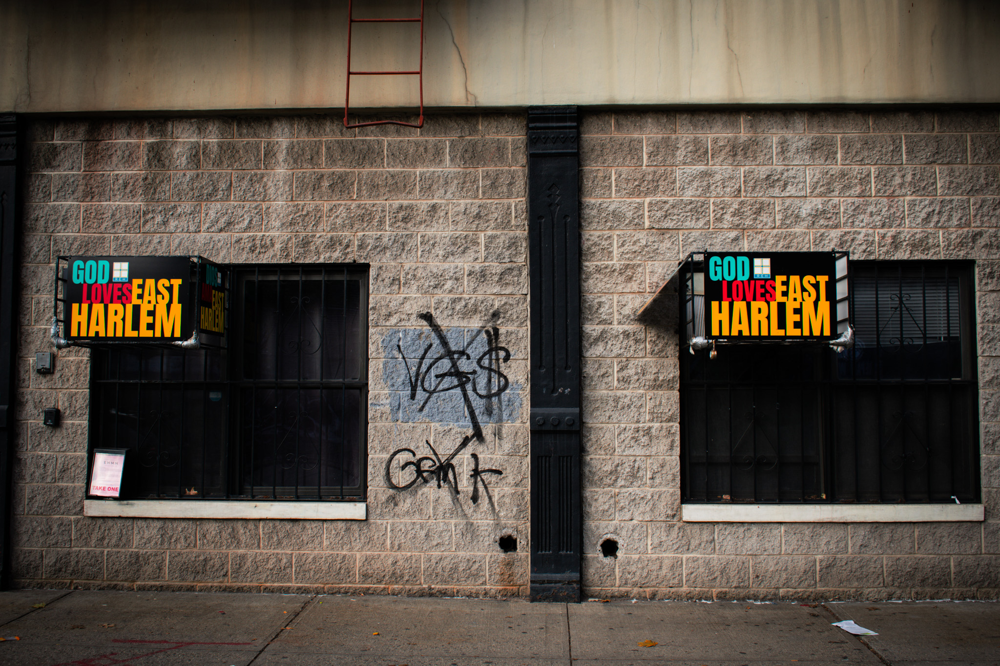
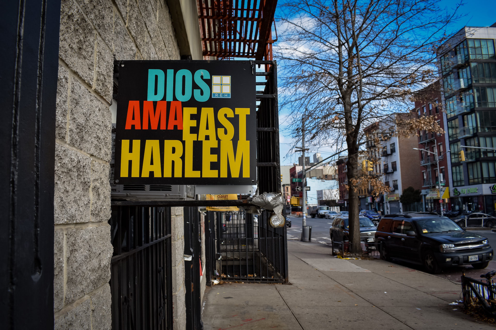
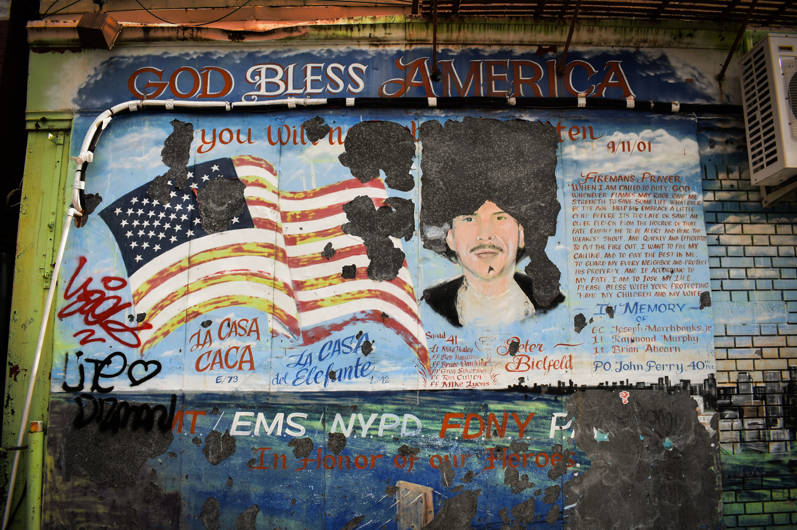

I have always thought about how god knows that we've been "good". I was always told as a kid that god was watching us at every moment of the day, even when we were sleeping, they could see all of the thoughts we had and the things destined for us. When I started questioning my faith I began questioning if god could see me questioning their existence too. Could they read the thoughts in my head? Could they see that my faith was waivering? At some point in high school I stopped believing altogether. I thought that if they couldn't answer any of my very serious prayers then they couldn't see that I didn't believe in them anymore. This project is inspired by all of the different ways my understanding of organized religion has been shaped by my community and how it has continued to formulate my persona as I've grown into my own person, straying away from what I believe to be brainwashing elements in the lives of the ones I love.